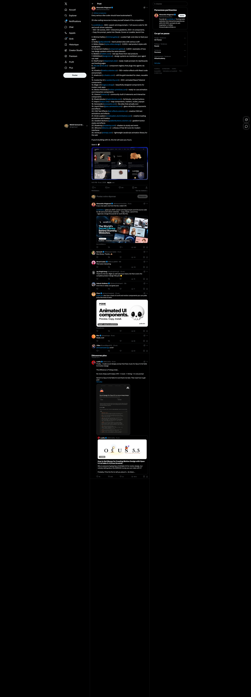

Comparaison
Source A · Post X
- Nature
- Liste personnelle, Himanshu Hingorani, 9 oct. 2026
- Contenu
- Interface et design : 10 composants UI, 7 animations, 4 inspirations, 2 design systems, 2 prompts
- Vérification
- Aucune date ni preuve affichée
- Attention
- L'auteur est fondateur de scrolltide.co, la ressource n°1 de la liste
Source B · awesome-vibecoding
- Nature
- Liste « awesome » GitHub (fork de roboco-io), critères d'admission publiés
- Contenu
- Travail avec des agents : code (10), app & UI (6), contexte (8), test (7), déploiement (4), espaces de travail (8)
- Vérification
- Date par entrée, du 18 sept. au 4 oct. 2026 ; « Check pricing » = prix non examiné
- Attention
- Mises à jour hebdomadaires assistées par des agents IA, selon le README ; version française
README.fr.mdnon relue ici
À retenir. A aide à choisir l'apparence et les composants ; B aide à choisir l'agent et la chaîne de travail (contexte, test, déploiement). Les deux se complètent plus qu'elles ne se recoupent.
Source A : les 25 ressources du post
Les URL marquées (?) sont écrites en petit sur la capture : à vérifier avant usage. Les catégories sont mon interprétation.
| n° | Nom | URL | Description | Catégorie |
|---|
Voir la capture d'origine

Source B : les outils par tâche
« Access / scope » vient du README. La date indique quand l'offre a été vérifiée, pas sa date de sortie ; ce n'est ni un audit de sécurité ni une promesse de disponibilité.
Sources
Capture du post X (docs/Vibe-coding/Vibe-coding.png) et github.com/Scap-Mehdi/awesome-vibecoding, README anglais relu le 12 oct. 2026 (dernière vérification listée : 4 oct. 2026). Descriptions reformulées en français. Ces informations évoluent : revérifie le README avant de t'en servir.